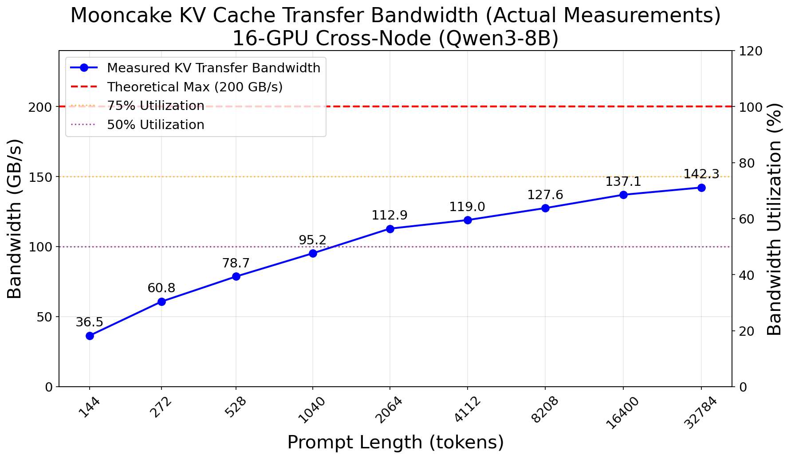
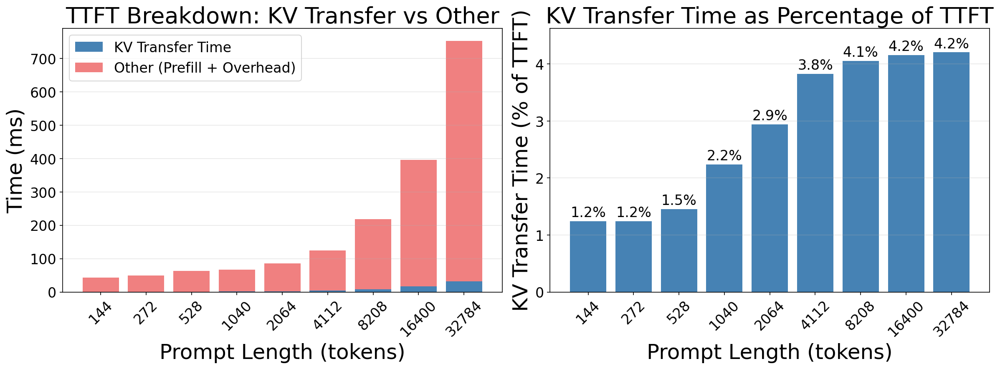
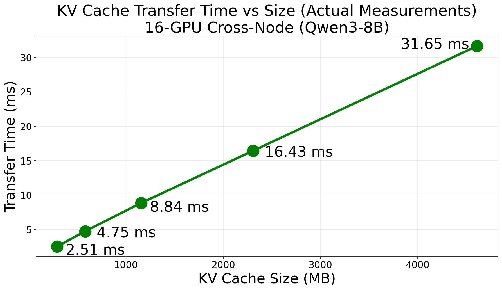

vLLM with Mooncake Transfer Engine Benchmark#
Mooncake has now implemented a vLLM connector, enabling direct support for the Prefill-Decode (PD) separation architecture in vLLM v1. We evaluated the performance of this integration, focusing on the efficiency of cross-node KV cache transfer using RDMA.
Benchmark Result#
Bandwidth Performance#
We measured the actual transfer bandwidth during the execution of requests with varying prompt lengths.

In a 1P1D (1 Prefiller, 1 Decoder) configuration using the Qwen3-8B model, Mooncake achieved a peak actual transfer bandwidth of 142.25 GB/s. Given the theoretical maximum bandwidth of approximately 200 GB/s for the 8x RoCE connections, this represents a 71.1% bandwidth utilization rate. This efficiency demonstrates that the custom transfer protocol and GPU Direct RDMA capabilities can effectively saturate high-performance networks.
End-to-End Latency (TTFT)#
We analyzed the Time To First Token (TTFT) to understand the impact of KV transfer overhead on end-to-end latency.


The results show that Mooncake’s high-speed transfer ensures that the overhead of moving KV cache is negligible compared to the computation time. For a prompt length of 32,768 tokens (transferring 4.50 GB of data), the actual KV transfer took only 31.65 ms, accounting for merely 4.2% of the total TTFT.
Detailed Performance Data:
Prompt Length |
Mean TTFT (ms) |
KV Size |
Actual Transfer Time (ms) |
Actual Bandwidth (GB/s) |
Bandwidth Utilization |
|---|---|---|---|---|---|
128 tokens |
46.09 |
20 MB |
0.54 |
36.53 |
18.3% |
256 tokens |
48.04 |
38 MB |
0.61 |
60.78 |
30.4% |
512 tokens |
59.91 |
74 MB |
0.92 |
78.73 |
39.4% |
1024 tokens |
67.29 |
146 MB |
1.50 |
95.23 |
47.6% |
2048 tokens |
85.31 |
290 MB |
2.51 |
112.88 |
56.4% |
4096 tokens |
124.42 |
578 MB |
4.75 |
119.00 |
59.5% |
8192 tokens |
212.05 |
1.13 GB |
8.84 |
127.57 |
63.8% |
16384 tokens |
387.52 |
2.25 GB |
16.43 |
137.09 |
68.5% |
32768 tokens |
749.62 |
4.50 GB |
31.65 |
142.25 |
71.1% |
Benchmark Setup#
H800 Cluster#
Experimental Environment
• Hardware Configuration: NVIDIA H800 (81GB) x 16 (8 per node), 8x Mellanox ConnectX-7 (RoCE over Ethernet). • Topology: Prefiller and Decoder connected via RoCE. • Model: Qwen3-8B • vLLM Version: 0.11.2.dev358 • KV Connector: MooncakeConnector • Transfer Method: Cross-Node RDMA
Launch Commands#
Prefiller :
VLLM_LOGGING_LEVEL=DEBUG CUDA_VISIBLE_DEVICES=0,1,2,3,4,5,6,7 \
python -m vllm.entrypoints.openai.api_server \
--model /work/models/Qwen3-8B \
--host 0.0.0.0 --port 8010 \
--tensor-parallel-size 8 \
--no-enable-prefix-caching \
--kv-transfer-config '{"kv_connector":"MooncakeConnector","kv_role":"kv_producer"}'
Decoder :
VLLM_LOGGING_LEVEL=DEBUG CUDA_VISIBLE_DEVICES=0,1,2,3,4,5,6,7 \
python -m vllm.entrypoints.openai.api_server \
--model /work/models/Qwen3-8B \
--host 0.0.0.0 --port 8020 \
--tensor-parallel-size 8 \
--no-enable-prefix-caching \
--kv-transfer-config '{"kv_connector":"MooncakeConnector","kv_role":"kv_consumer"}'
Proxy (Decoder Node):
python tests/v1/kv_connector/nixl_integration/toy_proxy_server.py \
--host 0.0.0.0 --port 8000 \
--prefiller-host 10.0.28.193 --prefiller-port 8010 \
--decoder-host 10.0.28.202 --decoder-port 8020
Benchmark Script#
We used vllm bench serve to generate traffic with varying prompt lengths.
for prompt_len in 128 256 512 1024 2048 4096 8192 16384 32768; do
vllm bench serve \
--model /work/models/Qwen3-8B \
--num-prompts 50 \
--random-input-len ${prompt_len} \
--random-output-len 128 \
--base-url http://127.0.0.1:8000 \
--backend openai-chat \
--endpoint /v1/chat/completions \
--max-concurrency 1 \
--dataset-name random
done
By the Mooncake Team
© Copyright 2025, Mooncake Team.